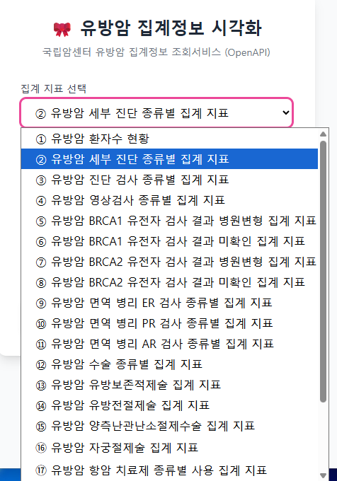
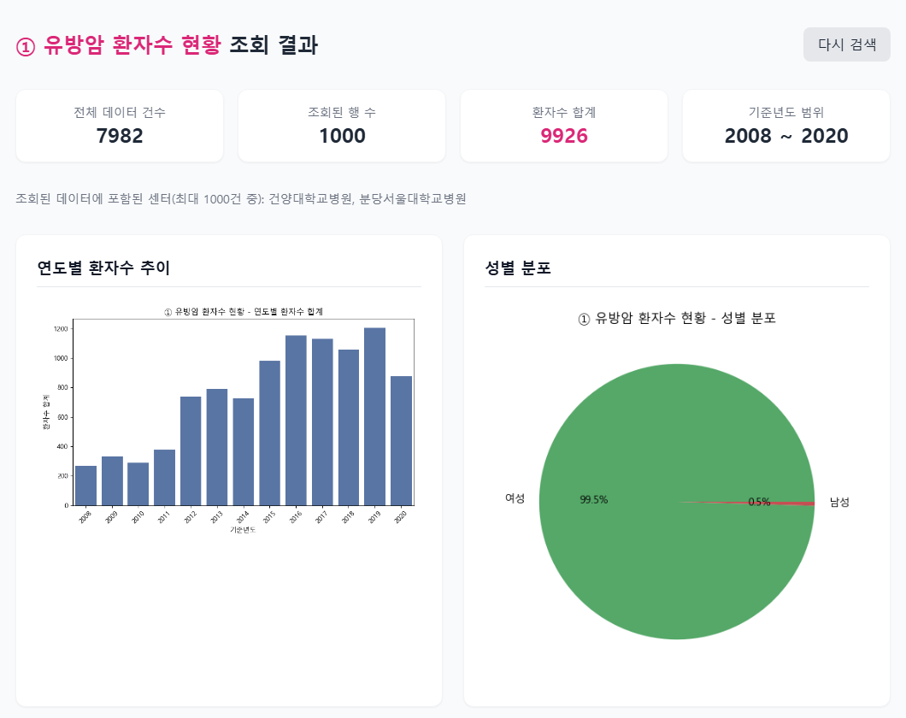

송류근
Ryu Kun Song
연세대학교 일반대학원 보건학과 박사과정
의료경영정보 전공 · Yonsei University
병원 행정 실무 경험을 바탕으로 의료이용 및 보건의료 데이터에 관심을 두고 연구를 배워 가고 있습니다.
학력 Education
2025.09 – 현재
연세대학교 일반대학원 · 보건학 박사과정
의료경영정보학 전공
2022.09 – 2025.02
연세대학교 보건대학원 · 보건학 석사
의료경영학 전공
2011.03 – 2015.02
차의과학대학교 · 보건행정학 학사
논문 Publications
A Cross-Sectional Study on Health Literacy and Self-Rated Health: Focusing on the Presence of Chronic Diseases
헬스 리터러시와 주관적 건강상태에 관한 단면 연구: 만성질환 유병 여부를 중심으로
Health Policy and Management (보건행정학회지), 2025; 35(2): 187–197 · 제1저자
DOI: 10.4332/KJHPA.2025.35.2.187 ↗
석사학위논문 기반
한국의료패널 2021 헬스 리터러시 부가조사 자료(성인 9,952명)로 헬스 리터러시와 주관적 건강상태의 연관성을 다중 로지스틱 회귀분석으로 살펴보았습니다. 헬스 리터러시가 적절한 집단일수록 주관적 건강상태를 좋게 보고할 가능성이 높았고, 이 연관성은 만성질환 유무에 따라 달랐으며 특히 고혈압과 당뇨병 환자에서 두드러졌습니다.
연구 경험 Research Experience
2025
외래서비스 이용 경험과 만족도: 만성질환 유병 여부에 따른 반복횡단면 연구
연세대학교 대학원 총학생회 2025-2 학술지원 프로그램 장려상 수상작
2026
산재 근로자의 비급여 의료비 부담이 의료기관 이용수준 변화에 미치는 영향
근로복지공단 제11회 산재보험패널 학술대회 대학원생 학술논문 경진대회 장려상 수상작
프로젝트 Project


유방암 집계정보 시각화 웹앱
보건학데이터사이언스 수업 기말 프로젝트 · 2026년 1학기
- 국립암센터의 「유방암 집계정보 조회서비스」 공공데이터 OpenAPI를 연동해, 21개 집계지표(환자수, 진단·검사, BRCA1/2 유전자검사, 면역병리, 수술, 항암·호르몬·방사선치료, 약제처방)를 조회할 수 있게 만들었습니다.
- 센터별·연도별·연령대별·성별 현황을 요약 카드, 차트 4종, 상세 테이블로 보여주는 Flask 웹앱을 구현했습니다.
- 공식 문서와 실제 API 동작의 차이를 직접 호출해 확인했고, 페이지네이션과 타임아웃 처리 방식을 사용설명서로 정리했습니다.
PythonFlaskpandasmatplotlibseabornOpenAPI
경력 Work Experience
2023.12 – 2024.02
용인세브란스병원 · 기획예산팀
일반직 인력 정원 검토
2022.04 – 2023.03
가톨릭중앙의료원 · 기획예산팀
월간·주간 정례보고(산하 병원 지표 비교), 부서 MBO, 일반기획
2020.07 – 2022.03
삼성서울병원 · 사회복지공헌파트
발달장애인, 난민 등 지역사회 취약계층을 위한 사회공헌 프로그램 기획
2016.03 – 2018.02
분당서울대학교병원 · 진료지원센터
진료부 지표관리, ‘실시간 지표 모니터링 시스템’ 기획 참여
2014.09 – 2015.09
세브란스병원 안이비인후과병원 · 경영지원팀
외래 원무, 수납
자격증 Certifications
2014.08.22
정보처리기사 (국가기술자격)
한국산업인력공단